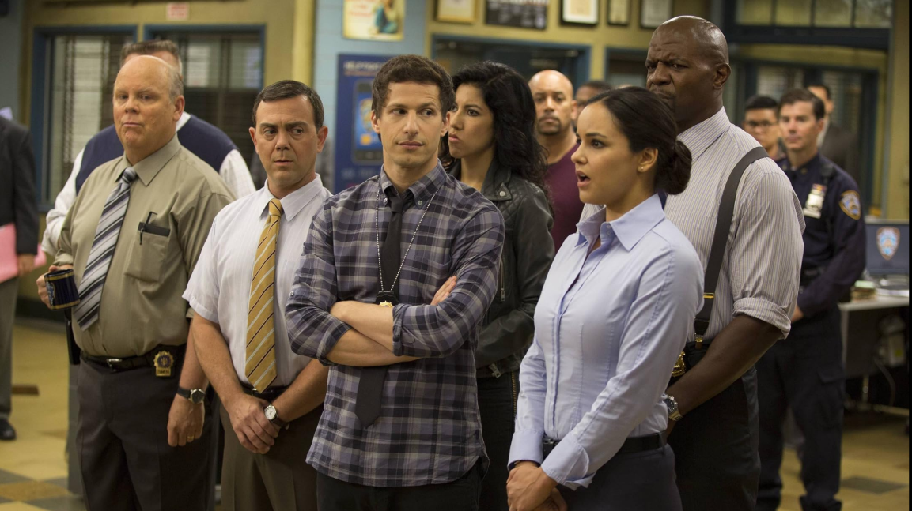

Brooklyn 99: Lei & Desordem
Golden Globe Award(2014): Melhor Série de Tv - Musical ou Comédia;
Golden Globe Award (2014):
- Melhor Ator em Série de Tv(Andy Samberg);
Critics' Choice Television(2016):
- Melhor Ator Coadjuvante em Série de Comédia (Andre Braugher )
Entre outros..
Nota(IMDb): 8.2/10;
Nota(Rotten
Tomatoes): 95% de aprovação crítica
Onde assistir: Netflix
Review
"Brooklyn 99: Lei & Desordem" é uma das melhores séries de comédia que existem. Com um cenário
divertido, uma trilha sonora incrível e um elenco extraordinário, a série conquista logo de cara.
O protagonista Jake Peralta, interpretado por Andy Samberg, é um personagem maravilhoso — é um prazer
assistir às suas piadas e acompanhar sua evolução ao longo das temporadas. Seu par romântico, Amy, é uma
das minhas personagens favoritas. Com seu jeito “certinha” e “nerd”, ela forma um casal adorável com
Jake. Foi muito legal ver o relacionamento deles crescer — de amigos que viviam implicando um com o
outro até se tornarem marido e mulher.
Além do humor, a série também aborda temas sérios como racismo, machismo e abuso de poder, tudo de forma
responsável e acessível. É uma ótima maneira de conscientizar as pessoas sobre questões do mundo real,
sem perder o tom leve da comédia.
Brooklyn Nine-Nine é uma série boa do começo ao fim — e com certeza me deixou muitas saudades quando
terminou.